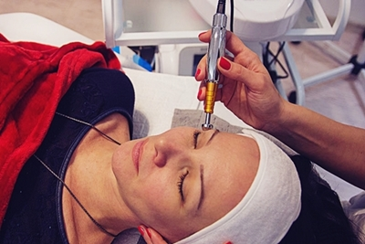
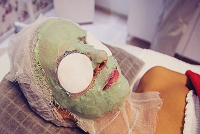

Tretmani lica

Higijenski tretman lica
Higijenski tretman je tretman dubinskog čišćenja kože.
On hidrira kožu i podstiče mikrocirkulaciju. Koža postaje
čvršća, elastičnija i hidrirana.
Higijenski tretman obuhvata: dezinfekciju lica, piling,
masažu, otvaranje pora, komedoekspresiju (istiskivanje
komedona, akni,...), dubinsku dezinfekciju visokofrekventnom
strujom, aplikaciju seruma u zavisnosti od potreba kože,
masku za skupljanje pora, sonoforezu i kremu za upotpunjavanje
efekta. Traje 90-120 minuta.
Enzimski tretman lica
Tretman namenjen masnoj i aknoznoj koži. Ovaj tretman ublažava crvenilo i redukuje iritacije. Eksfolativni enzimi ananasa i papaje, zajedno sa antisepticima, antioksidansima i antiiflamatorima, odstranjuju izumrle površinske ćelije, razlažu nečistoće i sužavaju pore i potpomažu dubinsko čišćenje kože. Koža izgleda mekše i blistavije. Može se kombinovati sa tretmanom voćnim kiselinama. Traje 90 minuta.
Tretman voćnim kiselinama
Najpoznatije voćne kiseline su glikolna, mlečna i vinska kiselina. Tretman je namenjen osobama koje pate od: rozacee, aknozne kože, dehidrirane kože, izborane kože, hiperpigmentacije (staračke pege na šakama, licu i podlaktici), hormonske hiperpigmentacije (fleke izazvane trudnoćom ili kontraceptivnim pilulama). Voćne kiseline skidaju mrtvi sloj kože i na prirodan način stimulišu stvaranje zdravih ćelija kože. Takođe, pomoću njih sitne bore postaju pliće, hiperpigmentacije izbeljuju, a aknozna koža dobija zdrav izgled.
Biološki tretman lica
Ovaj tretman namenjen je usporavanju procesa starenja kože. Može se primeniti na svaki tip kože. Sastoji se od: dubinskog čišćenja kože, masaže lica, ubacivanje aktivnih supstanci u kožu lica i vrata, maske i kreme za upotpunjavanje efekta. Traje 60-90min.
Mikrodermoabrazija
Mikrodermoabrazija je blaga metoda pomoću koje se uklanja površinski sloj kože. Vrlo je korisna za poboljšanje teksture kože. Obavlja se specijalnim dijamantskim glavama koje mehanički skidaju površinski deo kože, a u isto vreme sondom se vrši vakum masaža koja čisti lice i poboljšava cirkulaciju i limfnu drenažu. Ovaj tretman može se primeniti na licu, vratu, dekolteu, leđima, laktovima, stomaku i butinama.
Mezoterapija
Mezoterapija je najsavremenija medicinska metoda podmlađivanja
kože. Ona poboljšava hidrataciju i elastičnost kože, smanjuje bore,
hiperpigmentaciju i ožiljke, redukuje lučenje sebuma i sprečava
pojavu akni.
Mezoterapija bez igle
Bezbolna metoda koja obezbeđuje prodiranje aktivnih supstanci u
dublje slojeve kože. Rezultat je poboljšanje tena, rehidrirana koža,
ublažavanje ožiljaka i fleka, podmlađena koža.
Derma pen
Stimulacijom kože mikroubodima i farmakološkim dejstvom
odgovarajućih koktela nezamenljiv je u borbi protiv bora,
kao i u smanjenju proširenih pora, hiperpigmentacija i
ožiljaka od akni.
Oksigeno terapija
Ovaj tretman naziva se i "tretman kiseonikom". Njime se poboljšava čvrstina, elastičnost, hidratacija i balans kože, smanjuju se iritacije, ublažavaju se ožiljci. Odličan je protiv upala i bakterija. Ima veoma pozitivno dejstvo na atrofičnu kožu, fotoostarelu kožu i kožu pušača. Često se dopunjuje mezoterapijom.
 